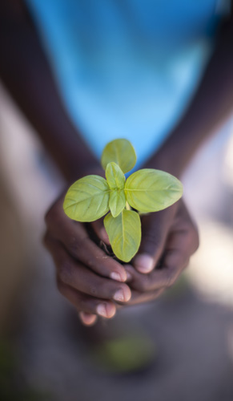

Proin sodales pulvinar tempor. Cum sociis natoque penatibus et magnis dis parturient montes
Lire l'actualitéNaturally powered by Naturex
Lire la vidéo
Scrollez pour naviguer
Actualité
Proin sodales pulvinar tempor. Cum sociis natoque penatibus et magnis dis parturient montes
Lire l'actualitéProin sodales pulvinar tempor. Cum sociis natoque penatibus et magnis dis parturient montes
Lire l'actualitéWho we are
What we do
How we do it
Notre mission :
apporter un bénéfice
unique
à chaque extrait qu'il
s'agisse de santé,
de nutrition comme de
plaisir à partir d'ingrédients
puisés dans la nature
Food & beverage
Nutrition & health
Personal care
test
test
test

test
test
test